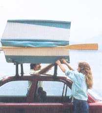
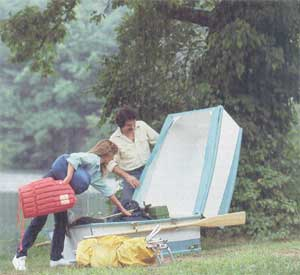
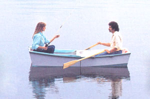
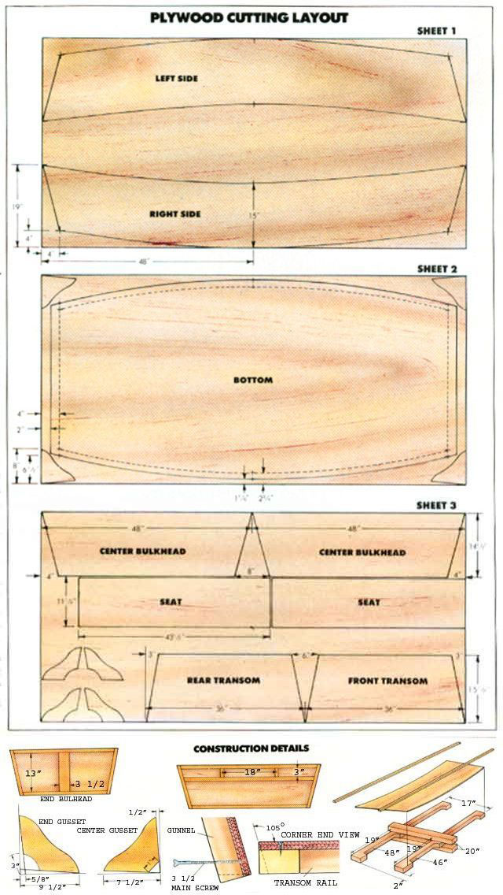

This lighweight boat doubles as cartop storage and suits the first-time boatbuilder.
This job shouldn't be beyond the skills of a novice carpenter.
IT'S NOT OFTEN THAT YOU CAN have your cake and eat it too, but if you find yourself whiling away your free hours outdoors-camping, boating or just messing around-and don't mind spending about $ 100 and a few days of that leisure time puttering with a delightfully simple wood project, that luxury can be yours any time you please. This 8'-long craft isn't just a water-worthy two-person row-boat, but at the flip of a latch becomes a lock-able, weatherproof cartop carrier built to hold about 30 cubic feet of goods that might otherwise have been left at home.
As a water lover-one who plans outings and vacations around fishing, lakeside camping and searching out ponds and rivers-I faced a choice: Hit the deep blue by laying down some long green for the purchase of a proper johnboat (and perhaps a trailer, registration and towing package on top of that), or go on camping trips without. Neither option appealed to me, so I took a third tack and, although I'm no boatwright, chose to build a boat from scratch, using basic techniques and materials simply because that's all I had to work with.
All told, the project required three 4' X 8' sheets of ¼” marine plywood. [Editor's Note: Similar boats have since been built using the less expensive B-C exterior panels, but it's still anyone's guess as to how well they'll hold up over time.] In addition to the plywood, I used 10 strips of ¾” X 1¼” blind stop (about 100 linear feet altogether; they come in random lengths of 10' to 12' and should bow without breaking), a 26” scrap of 1 X 4, a 1 ½” X 4' section of brass-plated continuous hinge, two 1 ½” X 3 ½” galvanized safety hasps, six reinforced staple plates to fit the hasps, two 3 ½” eye-bolt snaps and a 1¼” X 3 ¾” locking draw pull catch.
I salvaged the oars and pinned lock sets from another boat. You'll need two pairs of oarlocks for this dinghy, since they also serve to secure the oars when the vessel's folded, creating a convenient set of carrying handles. Four small eyebolt snaps hold the lock shafts in place.
For fasteners, I bought 800 No. 6 X ¾” anodized drive screws, 18 in a No. 8 X 1½” size and 16 more, 3” long. Eight No. 8-32 X 1” flathead machine screws and 32 No. 8s, each ¾” in length, were used to hold the metal hardware. The wood joints and seams were glued and sealed with four 10-ounce tubes of exterior construction adhesive. Finally, to button up the box along the edges when it's used as a carrier, I cut two 12” X 48” strips of colored vinyl fabric and bought two dozen pairs of plated snap fasteners.
By this time, you're probably ready to get to work on your own boat. Got two sawhorses and a sharp pencil? Start by striking center lines (for reference) across two pieces of plywood and marking the two lengthwise lines on the third sheet at the points indicated in the illustration. Then, on that same third sheet, go on to measure and mark off the outlines of the center bulkheads, the front and rear transoms and the two seats.
Now, on one of the center-marked panels, measure back 4” along each edge at all four comers, and, with the help of a square, strike perpendicular lines from these points to establish intersecting points near each corner. Mark the plywood at the following distances in from each long side: 19” at the corners and 15” at the center line. This will be Sheet 1, as indicated in the plan views.
Next, choose a clear-grained, straight piece of blind stop, and mark its center on the widest face. Then clamp that point to the edge of Sheet 1 at its center line. With a buddy's help, urge the wooden strip into a bow, so its outer edge meets the intersecting points at each end of the panel. Clamp the wood in place, then scribe a line onto the plywood, using the strip as a guide. Go on to repeat the procedure with a second strip, this time using the center line mark as a starting point and the 19" marks as a goal. The process can be simplified if you use a pipe clamp to hold the second strip in place while you bow the ends, and cut some temporary spacers to fit between the strips in order to keep them aligned.
When you've finished scribing the curves, strike a straight line between the intersecting point and the 19" mark at each end. If you cut out this one side with a jigsaw, you can use it as a template to outline the other side on what's left of the sheet, lining it up more or less with the corner points you established earlier.
Now mark out the boat's bottom, which is the other center-lined panel, on Sheet 2. This time, draw two parallel lines across each end at points 2" and 4" from the edge. Then use the square to strike lines perpendicular to these, 6 ½” and 8" inward from each corner, measured along the ends. Finally, on the center line, indicate marks at points 1¼” and 2 ¾” inward from each side.
The bowing technique is the same. When you're finished, you'll have traced four arcs onto the panel-two outer ones, which you'll cut right away, and two inner ones (marked as dotted lines in the illustration), which are used for reference when assembling and trimming the hull later on. Cut out the bottom panel, then halve it, as well as the side sections, along the center line. Take care to save the comers, because you'll need them next for making the center gussets.
After removing the six main parts from Sheet 3, use the detail provided to draw the outlines of the end and center gussets on the scraps left over from the second and third sheets. Trim out the eight gussets and set them aside for later.
The next few steps will require that you 1) make a small bending jig out of 2 X 4s and 2) locate about 10 clamps to temporarily secure the gunnel and bottom rails to the side panels in preparation for fastening. The jig's a snap-simply trim the lumber to the dimensions shown in the illustration, cut out the reliefs in the long members as indicated, and screw the frame together. Pay par ticular attention to the placement of the center blocks, since they dictate the degree of hull bow.
Once the jig's completed, you're ready to set up each of the boat's side panels. Cut the upper and lower rails about 1' longer than necessary (that'll allow you a purchase when bending them into position), and trim some small pads out of scrap so the clamps don't damage the plywood. Lay a uniform bead of adhesive along the back of the strips, then clamp the square end of the panel and the rails to the jig.
Next, guide the panel down against the jig frame, and bow the rails to meet their targets at the opposite end. Put clamps at the center, the transom corners and the two areas between, but don't secure them until you've set the rails flush with the edges of the panel. That done, fasten them permanently with a line of screws.
All four panels are formed in the same fashion, but you'll have to let the adhesive on each one set before removing the clamps for the next. In the meantime, if you have some locking pliers, you can complete the framing on the two transoms and center bulkheads.
These components aren't bowed, so assembling them requires little more than cutting the strips to fit the panels (see diagrams), laying a solid adhesive bead behind each piece and locking the parts together before driving screws-about 2" apart-from the plywood side. Be aware that you'll have to plan for the 3" main screws that will penetrate each corner, so leave room in those areas by setting the end fasteners slightly lower than the others in the row.
After about two days of curing time, it's safe to release the assembled sections. In the next step, you'll be squaring up the sides of one half of the boat in preparation for fastening the corners. If you have a sheet of rigid plywood, set it on a pair of sawhorses, and measure off the location of the center line and the corners-to-be, using the straight end of the plywood table as a starting point.
Then clamp a center bulkhead, top rail down, to that edge, and align the other three sections with the marks, employing pipe clamps at the corners where needed.
Next, by using a pair of compasses to scribe the correct bevel onto the ends of the transom uprights (or by simply marking a bevel angle of 105°), indicate the amount of wood strip you'll have to remove to allow the side panels to join flush with the ends of the transom, then unclamp the sides.
You can use a circular saw, a jigsaw or even a belt sander to trim the end bevels, as long as the finished surface is fairly uniform. Once the corners are taken care of, use the following procedure to level the bottom rails: First, lay heavy glue beads along the edges of the transom and bulkhead, and clamp the four sections together, squaring them by the marks on the plywood table. Drive a row of ¾” screws, 1½” apart, along the edges of each side, then drill a 3/32” pilot hole and sink a 3" main screw at each corner joint. Finally, hand-plane the rail faces, taking care to maintain a consistent angle as you work.
When the adhesive has cured, remove the clamps, and smooth the beveled edges with a sanding block. Apply a heavy bead of adhesive to the facing edge of the bottom rails, then position and fasten the bottom panel in place, checking for gaps as you work from the center to the ends and wiping away excess glue with a rag. After an appropriate curing time, use your jigsaw-set at the proper angle-to cut the skirt and rail tips from around the bottom panel.
Finally, cut a pair of strips 4' long, and center them lengthwise on the outside of the bottom panel, 18" apart. They act as stiffeners to flatten and support the plywood and keep the hull square. Glue them in place, then fasten one end of each piece from the outside. Draw the strips down, and screw in the other ends; the centers are secured from the inside with ¾” screws. Trim the ends afterwards, being careful not to split the wood.
If you've come this far, you've completed half of the basic boat. Start work on the other half, using the same plywood table and measuring techniques to assure that both hulls are symmetrical. While waiting for the glue to dry, you can fill your time finishing the details described next, which apply to both sections.
Each corner is strengthened with the gussets cut earlier. They're positioned about 1 1 / 2 " below the upper rails on strips cut to fit the edges of each plate. Since the transoms and sides are fixed at an angle, the supports have to be beveled at the top; trial-fit the plates, and trace their position on the hull. You can then determine the necessary bevel by holding the strips to the line.
Once all the supports are trimmed, glue them in place and fasten them from the outside with ¾” screws. The gussets are secured from the top in the same way.
The seat supports are 9 ¾” strips attached to the cross rails of the bulkheads and, 10 ½” below the rails, to the transom backboards. Again, you'll have to bevel the upper surfaces of the end strips so that each seat lies flush. With the supports in place, check the seat boards for fit, and trim length if needed. Then glue and fasten the seat rails to the lower edges of the boards. (You'll probably have to bevel the ends of the rails to make them fit; the seats are meant to be removable and are not screwed down.)
All that remains at this point is caulking, paintwork and fastening the hardware. First, lay a solid bead of adhesive onto the inside corner of each hull joint where the glue hasn't already oozed out. Then seal the hull inside and out with an exterior-grade sealer/primer or a water-sealing primer. After it's dried, paint both sides of the hull with an alkyd-based exterior or deck-and-floor paint, then go on to decorate the trim in the complementary color of your choice. Because the boat isn't meant to stay in the water, a more costly marine finish isn't really necessary.
To fasten the hinge and draw pull catch, clamp both halves of the boat squarely together in the folded position, and center the hinge leaves at the bulkhead joint before driving the screws. Secure the catch at the opposite end in the same way.
Then open the craft, and position the hasp-and-staple assemblies to bridge the center line, just above the floor. Attach each component with ¾” machine screws and nuts, using No. 8 flat washers or drilled sheet-metal plates to protect the inner surface of the plywood. Two more sets of staple plates-one pair used as front tie-down eyes and the other to hold the hasp flaps when they're idle-also get bolted on, the former to the lower bow corners of the boat and the latter in the middle, next to the hasps.
The oarlock mounts are bolted through the gunnel rails, each pair 18" apart. The best way to position these is to slip each oar through its two locks with the lock shafts upside-down in the mounts. Then place the mounts against the rails so the center ones are about 12" from the hinge. Mark the holes, drill them, and use the 1" machine screws as fasteners, countersinking the nuts slightly by boring a larger opening at the bottom.
With the boat still unfolded, secure the lower edges of the fabric strips, vinyl side out, to the inside edges of the gunnels with some screw-point male snaps. Close the boat, then pull the fabric around the oars, and place male snaps at the corners and in the center of each oar shaft. Install the female caps through the fabric to match the exposed snaps.
This little clamshell of a boat has far surpassed my original expectations. At 65 pounds unladen, it's light enough for two people to lift on or off the roof racks without much trouble. Our family has crisscrossed the East Coast and the Midwest, toting it along without a hitch for several years now, glad for the extra storage space. I've even used it as an emergency lean-to on impromptu camping trips. Am I pleased? You bet-and I'm also willing to wager that a little folding boat will make you happy as a clam, too!
Editor's Note: Admittedly, building a boat might be somewhat intimidating to the workshop novice or to someone who's not used to large wood projects. For more help with this one, turn to page 128 of this issue.
|
 Facing page: In its fully folded position, the 65 pound craft is a weatherproof cartop carrier; the cars double as handles. On the ground it can be used as temporary storage and accommodates about 30 cubicfeet of equipment. Above: the boat, locked open to its eight-foot length. |
 |
 |
|
 |
|
|